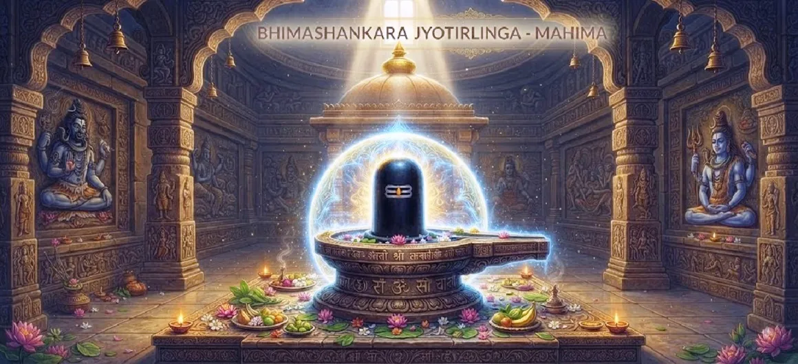

भीमाशंकर ज्योतिर्लिंग की महिमा
कोटिरुद्र संहिता का तेईसवां अध्याय भीमाशंकर ज्योतिर्लिंग की गहन आध्यात्मिक महिमा और शाश्वत महत्व का जश्न मनाता है।
धर्म की विजय के बाद, यह अध्याय इस पवित्र स्थल पर शरण लेने वाले सभी लोगों के लिए उपलब्ध आशीर्वाद, शांति और मुक्ति पर प्रकाश डालता है।
यह भगवान शिव की स्थायी कृपा के प्रति एक उज्ज्वल श्रद्धांजलि के रूप में कार्य करता है, जो जीवन को बदल देती है और आत्माओं को परमात्मा की ओर ले जाती है।
अध्याय 23 की मुख्य बातें
आध्यात्मिक महिमा
उस स्थान की अत्यधिक पवित्रता जहां शिव प्रकट हुए।
परिवर्तनकारी अनुग्रह
भीमाशंकर की पूजा कैसे भक्त का मार्ग बदल देती है।
शाश्वत शांति
ईमानदार तीर्थयात्रियों ने गहन शांति का अनुभव किया।
दैवीय सुरक्षा
शिव ने उन सभी के लिए सुरक्षा का वादा किया है जो उनकी शरण में हैं।
मुक्ति का मार्ग
ज्योतिर्लिंग मोक्ष और उच्च ज्ञान का प्रवेश द्वार है।
स्थायी महिमा
इस पवित्र भूमि पर शिव की शक्ति की स्थायी उपस्थिति है।
इस अध्याय में मुख्य विषय
पवित्र स्थल की पवित्रता
अध्याय में भीमाशंकर के आसपास के वातावरण का वर्णन किया गया है, जो हमेशा भगवान शिव की अभिव्यक्ति की दिव्य ऊर्जा से ओत-प्रोत है।
भूमि स्वयं उस पर चलने वाले सभी लोगों के लिए एक अभयारण्य के रूप में कार्य करती है।
भीमेश्वर की दीप्तिमान शक्ति
भीमाशंकर प्रकाश की किरण के रूप में चमकते हैं, इसका आध्यात्मिक प्रभाव दुनिया को आशीर्वाद देने के लिए सभी दिशाओं में फैल रहा है।
ज्योतिर्लिंग के भीतर की शक्ति अनंत है, जो हर भक्त की प्रार्थना पूरी करने में सक्षम है।
भक्तिपूर्ण पूजा का आशीर्वाद
ऐसा कहा जाता है कि इस स्थान पर ईमानदारी से की गई पूजा आत्मा को पिछले कर्मों से शुद्ध कर आध्यात्मिक उन्नति का द्वार खोलती है।
भक्त स्वयं को भगवान की लौकिक इच्छा के अनुरूप पाते हैं।
ईमानदार साधक के लिए शांति
यह मंदिर सांसारिक मन की बेचैनी को शांत करते हुए गहन शांति का वातावरण प्रदान करता है।
तीर्थयात्री स्पष्टता और आध्यात्मिक उद्देश्य की एक नई भावना के साथ निकलते हैं।
ईश्वरीय कृपा से सुरक्षा
शिव का सुरक्षा का वादा उन सभी पर लागू होता है जो आस्था और विनम्रता के साथ ज्योतिर्लिंग के पास जाते हैं।
उनकी कृपा विपत्ति के विरुद्ध एक अभेद्य ढाल बनती है।
मोक्ष की प्राप्ति
अंततः, भीमाशंकर की महिमा भक्त को मोक्ष की ओर ले जाने की क्षमता में निहित है, जो जन्म और मृत्यु के चक्र से अंतिम मुक्ति है।
यह ईश्वर की शाश्वत वास्तविकता के लिए एक पुल है।
ज्योतिर्लिंग का महत्व
एक ज्योतिर्लिंग के रूप में, यह स्थल अनंत प्रकाश के स्तंभ का प्रतिनिधित्व करता है, जो सांसारिक क्षेत्र को शिव के दिव्य अस्तित्व से जोड़ता है।
यह पूजा और आध्यात्मिक अभिव्यक्ति का केंद्र बिंदु है।
शाश्वत दिव्य मार्गदर्शन
ज्योतिर्लिंग की उपस्थिति यह सुनिश्चित करती है कि सत्य की तलाश करने वालों के लिए मार्गदर्शन हमेशा उपलब्ध है।
इस पवित्र स्थल पर चिंतन के माध्यम से शिव का ज्ञान सुलभ है।
भक्तियोग की महिमा
यह अध्याय समर्पित सेवा और भक्ति के गुणों की प्रशंसा करता है, इस बात पर जोर देता है कि ये भगवान को दिया गया सर्वोच्च प्रसाद हैं।
भक्ति साधक को भीतर से बदल देती है।
अध्याय 24 की ओर
भीमाशंकर की महिमा का जश्न मनाने के बाद, कथा एक नई जगह पर एक और पवित्र यात्रा की तैयारी करती है।
पाठकों को अध्याय 24, घुश्मेश्वर की महिमा को जारी रखने के लिए आमंत्रित किया जाता है।
अध्याय 23 की मुख्य शिक्षाएँ
शाश्वत पवित्रता
ईश्वरीय उपस्थिति अनुग्रह के स्थायी स्रोत बनाती है।
भक्ति की शक्ति
समर्पित आराधना आत्मा को परमात्मा से जोड़ती है।
आंतरिक शांति
सच्ची शांति शिव के प्रति समर्पण में मिलती है।
दिव्य कवच
शिव में आस्था अचूक सुरक्षा का काम करती है।
अंतिम लक्ष्य
मोक्ष आध्यात्मिक आकांक्षा का शिखर है।
परिवर्तनकारी प्रकाश
शिव की कृपा अहंकार को जला देती है, जिससे हमारा दिव्य स्वभाव प्रकट हो जाता है।
आध्यात्मिक चिंतन
भीमाशंकर ज्योतिर्लिंग की महानता इस बात का प्रमाण है कि ईश्वर सदैव हम तक पहुँच रहे हैं। जब हम ऐसे पवित्र स्थानों की यात्रा करते हैं, तो हम केवल भूमि भर में यात्रा नहीं कर रहे होते हैं, बल्कि अपनी चेतना की गहराई में यात्रा शुरू कर रहे होते हैं। इस ज्योतिर्लिंग की महिमा पर ध्यान करके, हम अपने भीतर उसी दिव्य उपस्थिति को विकसित करना शुरू कर सकते हैं, अपने जीवन के हर पल को भगवान शिव की भक्ति के प्रसाद में बदल सकते हैं।
अध्याय 23 का संदेश जीना
अपने दिल के भीतर पवित्र स्थान की शांति रखें, जिससे यह पूरे दिन आपके कार्यों का मार्गदर्शन कर सके।
जीवन के सभी पहलुओं में ईश्वर की उपस्थिति को पहचानते हुए, दैनिक भक्ति की आदत को बढ़ावा दें।
यह जानते हुए विनम्रता और विश्वास बनाए रखें कि शिव का प्रकाश आपके मार्ग को रोशन करने के लिए हमेशा चमकता रहता है।
प्रमुख आध्यात्मिक अवधारणाएँ
अनंत प्रकाश के स्तंभ के रूप में शिव की अभिव्यक्ति।
अस्तित्व के चक्र से आत्मा की मुक्ति.
सभी आध्यात्मिक साधकों के लिए भगवान का दयालु समर्थन।
पवित्र प्रेम और समर्पण जो भक्त को भगवान से जोड़ता है।
चेतना में स्पष्टता और दिव्यता की ओर बदलाव।
विशिष्ट पवित्र स्थानों में दिव्य की निरंतर ऊर्जा।
अध्याय सारांश
कोटिरुद्र संहिता अध्याय 23 भीमाशंकर ज्योतिर्लिंग की गहन आध्यात्मिक महिमा पर प्रकाश डालता है। इसमें ईमानदारी से पूजा करने वालों को मिलने वाले अपार आशीर्वाद, शांति और मुक्ति का विवरण दिया गया है। यह अध्याय शिव की सुरक्षात्मक कृपा की शाश्वत प्रकृति पर जोर देता है और सभी आत्माओं को उनके दिव्य प्रकाश के लिए अपना रास्ता खोजने के लिए आमंत्रित करता है, कथा को अध्याय 24 में अगले पवित्र स्थान की ओर ले जाता है।
अक्सर पूछे जाने वाले प्रश्न
1. कोटिरुद्र संहिता अध्याय 23 का मुख्य फोकस क्या है?
अध्याय 23 अपार आध्यात्मिक महिमा, स्थल की पवित्रता और भीमाशंकर ज्योतिर्लिंग की पूजा करने वालों को दिए जाने वाले परिवर्तनकारी आशीर्वाद पर केंद्रित है।
2. भीमाशंकर को इतना शक्तिशाली क्यों माना जाता है?
इसे भगवान शिव की सुरक्षात्मक कृपा की अभिव्यक्ति के रूप में प्रतिष्ठित किया जाता है, जिसे धर्म को बनाए रखने और सच्चे भक्तों को शाश्वत मुक्ति प्रदान करने के लिए स्थापित किया गया है।
3. इस ज्योतिर्लिंग पर पूजा करने के क्या लाभ हैं?
ऐसा कहा जाता है कि भक्तों को नकारात्मक प्रभावों से बचाया जाता है, आंतरिक शांति दी जाती है, और मोक्ष (मुक्ति) की ओर आध्यात्मिक प्रगति का आशीर्वाद दिया जाता है।
4. यह अध्याय पिछले अध्याय से किस प्रकार संबंधित है?
अध्याय 22 में राक्षस भीम के विनाश के बाद, यह अध्याय उस स्थान के उत्सवपूर्ण पवित्रीकरण के रूप में कार्य करता है जहां शिव ने अपनी शक्ति प्रकट की थी।
5. इस अध्याय में कौन सी कथा वर्णित है?
कथा अध्याय 24 में अगली पवित्र कहानी, 'घुश्मेश्वर की महिमा' में बदल जाती है।
6. भीमाशंकर मंदिर का आध्यात्मिक सार क्या है?
यह मंदिर अंधेरे पर प्रकाश की स्थायी विजय और सभी साधकों के लिए शिव की दया की स्थायी उपलब्धता का प्रतिनिधित्व करता है।
"भीमाशंकर ज्योतिर्लिंग की महिमा आत्मा को अपने स्रोत पर लौटने, शांति, सुरक्षा और शिव के प्रकाश में परम मुक्ति पाने का शाश्वत निमंत्रण है।"
कोटिरुद्र संहिता के माध्यम से जारी रखें
अध्याय 23 भीमाशंकर की महिमा की पड़ताल करता है। अध्याय 24, घुश्मेश्वर की महिमा को जारी रखें।